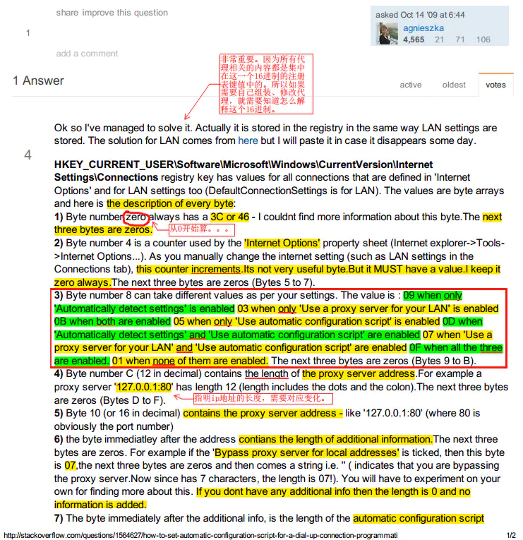
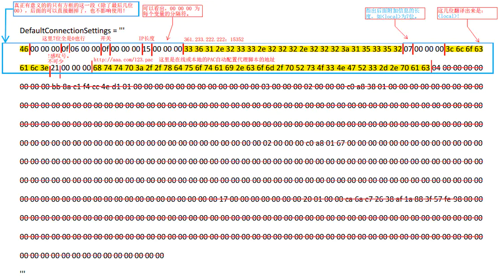
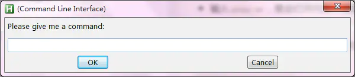
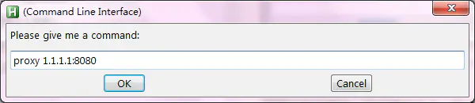

来源：https://www.jianshu.com/p/49c444d9a435
> 声明下：不同于网络上千百篇方法，下文是经过各种严格测试都通过的，同时也是一个实验的过程，排除了各种不靠谱的方法。有需要的可以评论来讨论，想要源码和相关参考文献或笔记的，也可以找我。
# 思路及启发
先说一下我这一路实验的思路吧，这个至关重要。之前一直在用 Python 做爬虫抓取数据，发现本机 IP 的问题不解决，爬虫相当于白费了。然后各种百度，不管是用 urllib2 还是 requests 的代理设置，都不管用。然后又各种搜索 Python 更改 windows 代理的设置，还需要接触 windos 底层 API，有复杂又不好实现。于是爬虫的学习就放弃了好长一段时间。
最近因为一直在用 AutoHotkey 大大加快电脑操作效率，各种快捷键和代替手动操作一些常规系统设置。突发奇想，想让它自动打开 IE 的 Internet 设置，然后自动点击 “局域网设置”，在自动在代理框里输入 IP 地址，按回车完成设置。这真是个好主意～
不过失败了。。。因为 AHK 在 IE 设置弹出的框框中选择某一个输入框，很麻烦，我也没法实现。所以就在想另一个办法，因为 AHK 操作 Windows 的 cmd 命令很方便，所以在想能不能用它打开 cmd 然后用命令设置 IE 呢？
然后又各种百度。发现这是可以通过 reg add 注册表设置来实现的！于是，就开启了 reg 命令的百度之旅。
按照网上各种方法，都指向了注册表的这个地方:HKEY_CURRENT_USER\Software\Microsoft\Windows\CurrentVersion\Internet Settings
大家都说在这个路径下，有这么 3 个项非常重要：
ProxyEnable- 使用代理ProxyServer- 代理 IP 的地址及端口号AutoConfigURL- 自动配置脚本（PAC）的地址于是试着用
reg add命令操作：
reg add "HKCU\Software\Microsoft\Windows\CurrentVersion\Internet Settings" /v ProxyEnable /tREG_DWORD /d 1 /f
reg add "HKCU\Software\Microsoft\Windows\CurrentVersion\Internet Settings" /v ProxyServer /d"192.168.1.1:8080" /f
这两句第一个是打开 “代理”，第二个是设置代理的 IP 地址。
先在命令行里敲了下命令，然后打开 regedit 注册表，刷新下看，还真改了！
然后手动打开 IE 设置，发现里面的内容也确实改变了。然后再打开浏览器，打开 IP 查询的网址，自己的 IP 真的变了！
至此以为大功告成了。结果再用时，发现大错特错 ——
再次用命令行改我指定的 IP 地址后，网页打不开了。。。
来回反复调试查错之后，我发现一个 “大秘密”：如果不手动打开 IE 设置里的局域网设置窗口的话，所有代理设置是不生效的。这是为什么呢？
百度里搜索不到。
于是我就用英文到 Stackoverflow 去搜，结果发现实际影响本机代理的注册表项目并不是之前的那几个！（真怀疑网上那些人说自己用这个项达到定时设置代理的人是不是玩真的。。。）
而是这个位置的项：HKCU\Software\Microsoft\Windows\CurrentVersion\Internet Settings\Connections
其中的 DefaultConnectionSettings 才是真正需要改的东西。打开以后各种乱码，原来是二进制值。
不过用编辑器看二进制值，确实发现代理 IP 地址和自动配置脚本的地址都在里面。
那怎么办呢？AHK 可不会操作二进制，也没什么方法能用 reg add 命令行直接把二进制值注入。
然后又进入无尽的百度模式。
# 注册表的二进制项修改方式的突发奇想
忘了什么启发的我吧，好像是自己无聊到在注册表上乱点，发现我刻意导出注册表。
然后导出了下试试，发现是个.reg 文件。然后无聊双击一下，发现可以把这个文件导入到注册表！
于是灵光一闪，赶紧用文本编辑器打开这个.reg 文件，发现里面是文字画的十六进制码，类似这样的：
Windows Registry Editor Version 5.00 | |
[HKEY_CURRENT_USER\Software\Microsoft\Windows\CurrentVersion\Internet Settings\Connections] | |
"DefaultConnectionSettings"=hex:46,00,00,00,03,00,00,00,07,00,00,00,0e,00,00,\ | |
00,31,39,32,2e,31,36,38,2e,31,2e,31,3a,38,30,00,00,00,00,21,00,00,00,68,74,\ | |
74,70,3a,2f,2f,78,64,75,6f,74,61,69,2e,63,6f,6d,2f,70,52,73,4f,33,4e,47,52,\ | |
33,2d,2e,70,61,63,00,00,00,00,00,00,00,00,00,00,00,00,00,00,00,00,00,00,00,\ | |
00,00,00,00,00,00,00,00,00,00,00,00,00 | |
"SavedLegacySettings"=hex:46,00,00,00,c1,0c,00,00,07,00,00,00,0e,00,00,00,31,\ | |
39,32,2e,31,36,38,2e,31,2e,31,3a,38,30,00,00,00,00,21,00,00,00,68,74,74,70,\ | |
3a,2f,2f,78,64,75,6f,74,61,69,2e,63,6f,6d,2f,70,52,73,4f,33,4e,47,52,33,2d,\ | |
2e,70,61,63,00,00,00,00,00,00,00,00,00,00,00,00,00,00,00,00,00,00,00,00,00,\ | |
00,00,00,00,00,00,00,00,00,00,00 |
# 于是最终答案就出来了（这里开始有 Python 介入）
这个时候我还不知道这是正确答案，只是想试一试：
用 Python 组成一段有效的二进制码（其实是十六进制） -> 把注册表值封装为 reg 文件 -> 通过命令行的 reg import 命令导入 reg 文件 -> 成功！
然后问题就在于怎么安装正确的格式组成
# DefaultConnectionSettings 十六进制值的分析
于是继续到 Stackoverflow 上搜索 DefaultConnectionSettings 这个项中十六进制的读取问题。
发现有一个人大概总结了每一位字节是代表什么，不过不够详细。地址在这里【How to set 'automatic configuration script' for a dial-up connection programmatically?】
然后开始做笔记：

接着开始尝试对照着那段二进制值看一看。于是我把这段十六进制码做成 PDF，方便做笔记，大概是这样的：

实际的十六进制值果然和网上的不同。经过实验，后面一大段画删除线的，都是没用的，删除也没关系。实际上，它只有在你手动打开 IE 设置面板时，才自动加上的。不管它，实际上有用的十六进制并不长。总结下也就这么几位：46 00 00 00 00 00 00 00 开关 00 00 00 IP长度 00 00 00 IP地址 00 00 00 是否跳过本地代理 21 00 00 00 PAC地址
其中，通过规律发现每个信息的分隔符是三个 00，即 00 00 00 。上面有 7 个 00 的，因为没什么用我就不讲了（其实第四个代表自增数，直接为 00 就好了）
当然，其中汉字的部分是十六进制格式的。
这几个汉字，是其中最重要的信息，具体如下：
开关 (switcher): 主要代表 IE 设置中复选框的选中情况，你可以打开 IE 设置看看。以下是所有可用的值（括号中是我用的别名）：
0F 全部开启 (ALL)；01 全部禁用 (Off)
03 使用代理服务器 (ProxyOnly)；05 使用自动脚本 (PacOnly)；
07 使用脚本和代理 (ProxyAndPac)；09 打开自动检测设置 (D)；
0B 打开自动检测并使用代理 (DIP)；0D 打开自动检测并使用脚本 (DS)；
IP 长度：必须是十六进制的，0 就是 00，7 就是 07,10 就是 0a,11 是 0b。在 Python 中，格式是
0xa，所以需要把格式统一为注册表的标准。IP 地址：直接把 IP 安装每个字符转十六进制就好了。如果 IP 为空的话，就直接为 00。这时会看到 switcher 后面跟了 11 个 00。。。
是否跳过本地代理：这段有点复杂，实际上我们几乎不用。如果不用的话直接为 00 就好了。但是用的话，就必须写为：
附加信息长度00 00 00 附加信息这样的。- 附加信息：只能是这句话：
<local> - 附加信息长度：因为附加信息是固定的，所以共 7 位，写为 07 就好了。
- 附加信息：只能是这句话：
PAC 地址：这个简单，直接把 PAC 地址翻译为十六进制就好了。如果没有则什么都不写。
至此这段十六进制值就全部解析完毕了。
剩下的就是把你需要的代理 IP 地址和 PAC 地址作为参数传进去就好了。然后把这段值封装到 reg 文件中的对应位置就完全 ok 了～这步太简单，就不用多说了。
# 增加更方便的功能
各种测试成功后，非常高兴。但是还有点余味不足，就想着多添加点方便的功能。
这个 Python 文件的最后成品可以做到这些事：
- 直接通过命令行传参数达到各种设置代理的效果。这个很自豪～第一次用系统参数功能，哈哈哈！
- 在文件夹中直接双击达到效果
- 在别的 Python 文件中（如爬虫）作为模块被使用
- 被 AHK 调用
# 在 Autohotkey 中调用 —— 极其方便极其傻瓜式操作！
不忘初心嘛～
python 处理一切完成后，又回到了 AHK 中。
这一步可能也就写了几分钟，让 AHK 直接带参数打开 python 脚本就做到了。比如设置一个代理 IP 地址：
path = "D:\setRegProxy.py" ;这里是python脚本的地址，随便放哪都行。
key = "0.0.0.0:80" ;这里根据需要设置为代理地址
Run % path " -o ProxyOnly " key
这样就齐活了～
当然，我的 AHK 脚本实现的功能比这个还要爽快 —— 弹出一个小输入框，直接粘贴一个 ip 地址，按回车就能实现代理设置。
# Python 脚本的源码 (setProxy.py)
只要机器上安装了 Python 2.x 版本就行，不需要依赖安装和设置其他任何东西。
# coding:utf-8 | |
''' | |
# Title : setRegProxy | |
# Author : Solomon Xie | |
# Utility : Via Registry key of windows, change proxy settings of IE on Windows. | |
# Require : Python 2.x, Windows 7 | |
# Reg Path: HKUC\Software\Microsoft\Windows\CurrentVersion\Internet Settings\Connections | |
# Anlysis : 注册表的二进制值(及关键信息)如下："46 00 00 00 00 00 00 00 开关 00 00 00 IP长度 00 00 00 IP地址 00 00 00 是否跳过本地代理 21 00 00 00 PAC地址" | |
# Method : 通过在cmd中导入reg文件的方式执行并立即生效。 | |
# Notes : - 二进制值的设置选项在代码中已经体现了。本代码可以根据需要自动设置代理。 | |
# switcher: 开关：0F全部开启(ALL)；01全部禁用(Off) | |
03使用代理服务器(ProxyOnly)；05使用自动脚本(PacOnly)； | |
07使用脚本和代理(ProxyAndPac)；09自动检测设置(D)； | |
0B自动检测并使用代理(DIP)；0D自动检测并使用脚本(DS)； | |
''' | |
import os, sys, re, getopt | |
def regIESettings(op, noLocal=False, ip='', pac=''): | |
''' | |
# 根据需求生成Windows代理设置注册表的.reg文件内容 | |
# DefaultConnectionSettings项是二进制项 | |
# 而具体这个二进制文件怎么解析，在收藏的PDF中有详细解释。 | |
''' | |
if not op : return | |
# 如果是设置 IP 代理的模式 则检查 IP 地址的有效性 (允许为空，但不允许格式错误) | |
if 'Proxy' in op and not ip == '': | |
# if len(extractIp(ip))==0 | |
if 1 > len(re.findall('([0-9]{1,3}\.[0-9]{1,3}\.[0-9]{1,3}\.[0-9]{1,3})\s*:{0,1}\s*([0-9]{1,5}){0,1}',ip)) : | |
print '---Unexpected IP Address:%s---'%ip | |
return | |
options = {'On':'0F','Off':'01','ProxyOnly':'03','PacOnly':'05','ProxyAndPac':'07','D':'09','DIP':'0B','DS':'0D'} | |
if op == 'Off': | |
reg_value = '46,00,00,00,00,00,00,00,01' | |
else: | |
switcher = options.get(op) | |
if not switcher: | |
print('\n---Unexpected Option. Please check the value after [-o]---\n') | |
return | |
skipLocal = '07,00,00,00,%s'%__toHex('<local>') if noLocal else '00' | |
reg_value = '46,00,00,00,00,00,00,00,%(switcher)s,00,00,00,%(ipLen)s,00,00,00,%(ip)s00,00,00,%(skipLocal)s,21,00,00,00%(pac)s' % ({ 'switcher':switcher,'ipLen':__toHex(len(ip)),'ip':__toHex(ip)+',' if ip else '','infoLen':__toHex(len('<local>')),'skipLocal':skipLocal,'pac':','+__toHex(pac) if pac else '' }) | |
settings = 'Windows Registry Editor Version 5.00\n[HKEY_CURRENT_USER\Software\Microsoft\Windows\CurrentVersion\Internet Settings\Connections]\n"DefaultConnectionSettings"=hex:%s' % reg_value | |
# print 'Using proxy address: %s' % ip | |
print(op, ip, pac) | |
print(options[op] +'\n'+ __toHex(ip) +'\n'+ __toHex(pac)) | |
print(settings) | |
# === 生成 reg 文件并导入到注册表中 === | |
filePath = '%s\DefaultConnectionSettings.reg'%os.getcwd() | |
with open(filePath, 'w') as f: | |
f.write( settings ) | |
cmd = 'reg import "%s"' %filePath | |
result = os.popen(cmd) | |
if len(result.readlines()) < 2 : | |
print('---Successfully import proxy into Registry on this machine.---') | |
return | |
def __toHex(obj): | |
if obj == '': return '' | |
elif obj == 0 or obj == '0' or obj == '00': return '00' | |
if isinstance(obj, str): | |
rehex = [str(hex(ord(s))).replace('0x','') for s in obj] | |
return ','.join(rehex) | |
elif isinstance(obj, int): | |
num = str(hex(obj)).replace('0x', '') | |
return num if len(num)>1 else '0'+num # 如果是一位数则自动补上 0，7 为 07，e 为 0e | |
if __name__ == '__main__': | |
# 获取文件外部参数 | |
# 用法：在命令行中输入 setRegProxy.py -o "ProxyOnly" -l --proxy"0.0.0.0:80" -l | |
opts, args = getopt.getopt(sys.argv[1:], 'o:p:a:l',['option=','proxy=','pac=','local']) | |
print(opts, args) #调试用 | |
if len(opts) > 0: | |
op, ip, pac = '', '', '' | |
noLocal = False | |
for o,a in opts: | |
if o == '-o' or o == '--option': op = a | |
elif o == '-p' or o == '--proxy' : ip = a | |
elif o == '-a' or o == '--pac' : pac = a | |
elif o == '-l' or o == '--local' : noLocal = False | |
pac = 'http://xduotai.com/pRsO3NGR3-.pac' if not pac else pac | |
if op == 'ProxyOff': | |
regIESettings(op='Off', ip=ip, pac=pac, noLocal=noLocal) | |
regIESettings(op='PacOnly', ip=ip, pac=pac, noLocal=noLocal) | |
elif op == 'PacOff': | |
regIESettings(op='Off', ip=ip, pac=pac, noLocal=noLocal) | |
regIESettings(op='ProxyOnly', ip=ip, pac=pac, noLocal=noLocal) | |
else: | |
regIESettings(op=op, ip=ip, pac=pac, noLocal=noLocal) |
# Autohotkey 源码
Autohotkey 怎么用呢？太简单了，傻到爆！
直接官网下载安装一个 Autohotkey 软件，也就几 M。然后呢，新建一个文本文件，把下面内容粘贴进去。把文件名后缀改为 .ahk ，然后双击就启动了脚本哈哈！
这时你试着按一下键盘上的 ScrollLock 键，就会弹出来一个对话框。效果是这样的：

你可以在这里输入改代理的命令～我设计的命令都非常简单，如下：
- 输入
proxy，就会打开 IE 设置的窗口 - 输入
proxy 192.168.1.1:8080，就会把代理设置为这个 IP - 输入
proxy on，就会打开代理（但是 IP 为空） - 输入
proxy off，就会关闭代理 - 输入
pac http://abc.com/123.pac，就开启某自动代理设置脚本 - 输入
pac off，就会关闭自动脚本

注意：
- 我这里注册的键是键盘上的 ScrollLock 按钮，按一下就有了。也可以自己设定一个。
- 下面的代码是处理过的，实际上这个按键远比它要方便的多：它是我的快速操作杀手锏，一条命令实现巨多功能。如有感兴趣的可以联系我讨论，或者看我的下一篇专门针对 AHK 的文章（如果我不犯懒写了的话）。
- 我设定的指令是
proxy ??这样的，如果嫌长或者不方便，可以改为别的自己用着舒服的。甚至不用弹出框，直接按一下 F1 之类的就完成设置都可以。不过这就需要稍微了解下 AHK 语法啦～（也不难）
ScrollLock::
{
; --- 获取指令及关键词 ---
InputBox, fullCommand, (Command Line Interface), Please give me a command:, , 600, 130 ;获取命令
if (fullcommand = "")
Return
; -- 解析命令 ---
split := " "
StringGetPos , posi, fullCommand, %split%
if (posi > 0) {
StringMid, eng, fullCommand, 0 , posi ;
StringMid, key, fullCommand, posi+2 , StrLen(fullCommand)
}
else {
eng := fullCommand
key := ""
}
; === 打开IE设置窗口的命令 ===
ieSettings := "rundll32.exe shell32.dll, Control_RunDLL inetcpl.cpl, ,4L"
; === python脚本的地址 ===
path := "D:\Solomon Xie\Workspace\setRegProxy.py" ;Python设置代理脚本，可接收命令行参数
; ---开始执行操作---
if (eng = "" and fullcommand != "")
Run % ieSettings
else if (eng = "Proxy"){
if (key = "")
Return
else if (key = "Off")
Run % path " -o Off "
else{
if (key = "On")
key := "" ;“获取”历史IP值太麻烦 先为空吧
else
key = "--proxy " %key%
Run % path " -o ProxyOnly " key
}
}
else if (eng = "Pac" and key != "") {
if (key = "" or key = "On")
key = "http://xduotai.com/pRsO3NGR3-.pac"
if (key = "Off")
Run % path " -o Off "
else {
key = "%key%"
Run % path " -o PacOnly --pac " key
}
}
Return
}
</article>
<svg width="1em" height="1em" fill="currentColor" aria-hidden="true" focusable="false" class=""><use xlink:href="#ic-like"></use></svg>63 人点赞 <svg viewBox="64 64 896 896" focusable="false" class=""data-icon="right"width="1em"height="1em"fill="currentColor"aria-hidden="true"><path d="M765.7 486.8L314.9 134.7A7.97 7.97 0 0 0 302 141v77.3c0 4.9 2.3 9.6 6.1 12.6l360 281.1-360 281.1c-3.9 3-6.1 7.7-6.1 12.6V883c0 6.7 7.7 10.4 12.9 6.3l450.8-352.1a31.96 31.96 0 0 0 0-50.4z"></path></svg>
<svg width="1em" height="1em" fill="currentColor" aria-hidden="true" focusable="false" class=""><use xlink:href="#ic-dislike"></use></svg>
_<svg width="1em" height="1em" fill="currentColor" aria-hidden="true" focusable="false" class=""><use xlink:href="#ic-notebook"></use></svg>_Python 学习笔记
<svg width="1em" height="1em" fill="currentColor" aria-hidden="true" focusable="false" class=""><use xlink:href="#ic-others"></use></svg>